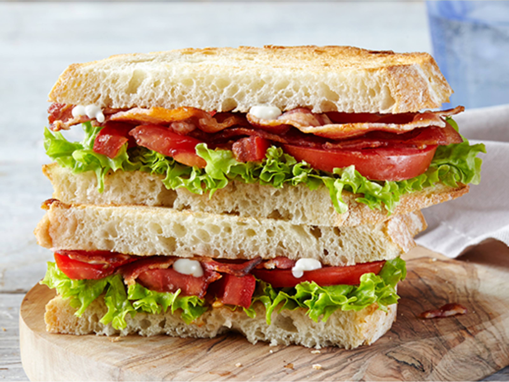

BLT Sandwich Recipe

The POSHEST BLT ever!
Love a BLT? Try our new take on the classic sandwich, with the staple ingredients of bacon, lettuce and tomato, plus some added extras for oomph:
Ingredients
- 6 rashers smoked streaky bacon
- 1 tbsp maple syrup
- 3 tbsp mayo
- ½ tbsp sundried tomato paste
- 4 slices of sourdough bread
- 6 chopped sundried tomatoes
- leaves of 1 Little Gem
Steps to make BLT
Here's a brief step by step of what to expect during this process:
- Heat the grill to high.
- Put the bacon on a foil-lined baking sheet and dizzle in maple syrup. Grill until crisp.
- Mix the mayo with the sundried tomato paste, then spread over the toasted sourdough.
- Add bacon, sundried tomatoes, and lettuce to the toast.
- Season with black pepper.
- Add the last piece of toast.
- Enjoy!